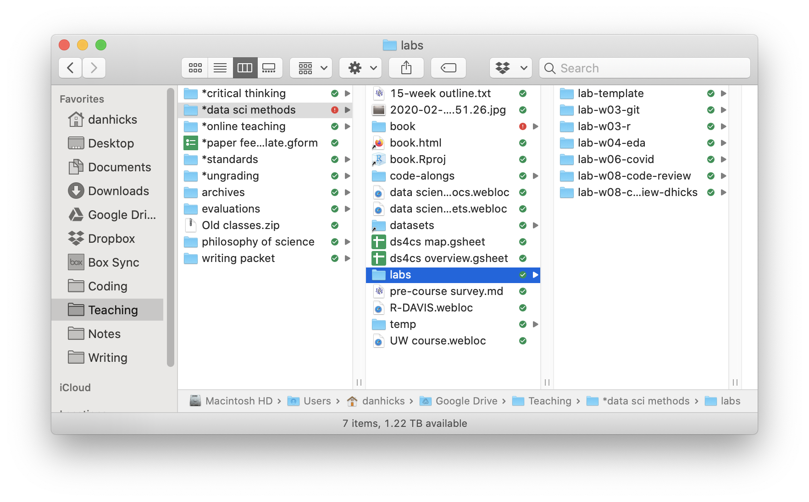

The life-changing magic of tidying your projects
Reading
- Noble (2009)
Some data management disasters
- The Economist (2011), “Video: Keith Baggerly, "When Is Reproducibility an Ethical Issue? Genomics, Personalized Medicine, and Human Error"” (n.d.)
- Herndon, Ash, and Pollin (2014), but you can just read Bailey and Borwein (Jon) (n.d.), Cassidy (n.d.), and/or watch Reinhart & Rogoff - Growth in a Time of Debt - EXERCISE! (2019)
- Laskowski (n.d.), Viglione (2020), Pennisi (2020)
- “How Excel May Have Caused Loss of 16,000 Covid Tests in England” (2020)
Dumpster organization
(ref:dumpster) 😱 Source: https://pbs.twimg.com/media/DFca5SRXsAAx1NA
- Dump all of your files into one place
- Use search tools to find what you want
- Just assume that things aren’t getting corrupted
- The way many Gen Z students think about their files? (Chin 2021)
Project organization
- Keep your project self-contained
- Locate files quickly
- Play nicely with version control
- Self-document key relationships between project files

Model 1: Noble (2009)

- Includes code for
- running experiments
- cleaning and analyzing data
- typesetting a LaTeX file into a PDF
- Other features
- notebook file, updated regularly
- chronological folders for experimental runs
binfor compiled code andsourcefor corresponding source files
Model 2: Some of DH’s projects
GitHub repo: https://github.com/dhicks/p_curve
14 directories, 121 files
.
├── DESCRIPTION
├── Makefile
├── README.md
├── _deploy.sh
├── out
│ ├── estimates_meta.png
│ ├── estimates_study.png
│ ├── fig_1_samples_young.png
│ ├── fig_2_young_composite.png
│ ├── fig_3_evidence_severity.png
│ ├── fig_4_evidence_likelihood_zero.png
│ ├── fig_5_evidence_likelihood_mix.png
│ ├── likelihood.tex
│ ├── linearity.png
│ ├── linearity.tex
│ ├── samples_schsp.png
│ ├── samples_simonsohn.png
│ ├── severity.tex
│ ├── slopes.png
│ ├── slopes.tex
│ ├── slopes_scatter.png
│ ├── test.png
│ └── test_out.png
├── p.curve
│ ├── DESCRIPTION
│ ├── NAMESPACE
│ ├── R
│ │ └── p-curve.R
│ ├── man
│ │ ├── draw_samples.Rd
│ │ ├── draw_studies.Rd
│ │ ├── flatten_to_chr.Rd
│ │ ├── likelihood_ratio.Rd
│ │ ├── many_metas.Rd
│ │ ├── p_gap.Rd
│ │ ├── p_value.Rd
│ │ ├── qq_linear.Rd
│ │ ├── qq_plot.Rd
│ │ ├── qq_slope.Rd
│ │ ├── schsp_curve.Rd
│ │ ├── schsp_slope.Rd
│ │ ├── simonsohn_curve.Rd
│ │ ├── t_test.Rd
│ │ ├── young_composite.Rd
│ │ ├── young_curve.Rd
│ │ └── young_slope.Rd
│ └── p.curve.Rproj
├── paper
│ ├── *enviro\ epi
│ │ └── EE\ Submission\ Confirmation\ for\ Young's\ p-value\ plot\ does\ not\ provide\ evidence\ against\ air\ pollution\ hazards.eml
│ ├── Young\ papers.gsheet
│ ├── Young.bib
│ ├── cover\ letter.pdf
│ ├── diff.pdf
│ ├── ehp
│ │ ├── A\ manuscript\ number\ has\ been\ assigned\ to\ Young's\ p-value\ plot\ does\ not\ provide\ evidence\ against\ air\ pollution\ hazards\ -\ [EMID_0ef854c3bb0b5cae].eml
│ │ ├── Decision\ on\ EHP\ Submission\ EHP8013\ -\ [EMID_932e44ac2192c44f].eml
│ │ ├── EHP-CFI-form.pdf
│ │ ├── cover\ letter.txt
│ │ ├── paper_2020-07-31.docx
│ │ └── title\ page.md
│ ├── example-refs.bib
│ ├── fig_1_samples_young.png
│ ├── fig_2_young_composite.png
│ ├── fig_3_evidence_severity.png
│ ├── fig_4_evidence_likelihood_zero.png
│ ├── fig_5_evidence_likelihood_mix.png
│ ├── header.yaml
│ ├── paper.md
│ ├── paper.pdf
│ ├── paper.synctex.gz
│ ├── paper.tex
│ ├── paper.zip
│ ├── paper_20201211.md
│ ├── peerj
│ │ ├── comments.md
│ │ └── peerj.pdf
│ ├── phil\ med
│ │ ├── [philmed]\ Editor\ Decision.eml
│ │ └── [philmed]\ Submission\ Acknowledgement.eml
│ ├── render.R
│ ├── summary.md
│ ├── summary.pdf
│ ├── summary.tex
│ ├── supplement.md
│ ├── supplement.pdf
│ ├── title.md
│ ├── title.pdf
│ ├── vancouver-superscript.csl
│ └── wlpeerj.cls
├── scripts
│ ├── Makefile
│ ├── run_metas.R
│ ├── run_metas.html
│ ├── run_metas_cache
│ │ └── html
│ │ ├── __packages
│ │ ├── power_sim_9c372ce79d0c5f5a133f461070cc735c.RData
│ │ ├── power_sim_9c372ce79d0c5f5a133f461070cc735c.rdb
│ │ ├── power_sim_9c372ce79d0c5f5a133f461070cc735c.rdx
│ │ ├── run\ simulations_b1dfebf278eb300e65b865f76b2893d2.RData
│ │ ├── run\ simulations_b1dfebf278eb300e65b865f76b2893d2.rdb
│ │ ├── run\ simulations_b1dfebf278eb300e65b865f76b2893d2.rdx
│ │ ├── vary_N_sim_7d1d09d59ab04fc75046799fcf7506f9.RData
│ │ ├── vary_N_sim_7d1d09d59ab04fc75046799fcf7506f9.rdb
│ │ └── vary_N_sim_7d1d09d59ab04fc75046799fcf7506f9.rdx
│ ├── run_metas_files
│ │ └── figure-html
│ │ ├── QQ\ linearity\ tests-1.png
│ │ ├── gaps-1.png
│ │ ├── gaps-2.png
│ │ ├── likelihood\ analysis-1.png
│ │ ├── likelihood\ analysis-3.png
│ │ ├── model\ validation-1.png
│ │ ├── model\ validation-2.png
│ │ ├── power_sim-1.png
│ │ ├── power_sim-2.png
│ │ ├── sample\ plots-1.png
│ │ ├── sample\ plots-2.png
│ │ ├── sample\ plots-3.png
│ │ ├── sample\ plots-4.png
│ │ ├── severity\ analysis-1.png
│ │ ├── severity\ analysis-2.png
│ │ ├── slopes-1.png
│ │ ├── slopes-2.png
│ │ ├── slopes-3.png
│ │ ├── slopes-4.png
│ │ ├── slopes-5.png
│ │ ├── slopes-6.png
│ │ ├── slopes-7.png
│ │ ├── unnamed-chunk-2-1.png
│ │ ├── unnamed-chunk-4-1.png
│ │ └── unnamed-chunk-6-1.png
│ └── scripts.Rproj
└── tree.mdJust the directories
.
├── out
├── p.curve
│ ├── R
│ └── man
├── paper
│ ├── *enviro\ epi
│ ├── ehp
│ ├── peerj
│ └── phil\ med
└── scripts
├── run_metas_cache
│ └── html
└── run_metas_files
└── figure-htmlscripts,paper, andoutp.curve, a little package containing the simulation code- simulation and analysis automatically reproduced: https://dhicks.github.io/p_curve/
A larger text-mining project
Published paper: https://doi.org/10.1162/qss_a_00150
GitHub repo: https://github.com/dhicks/orus
23 directories, 274 files (plus 160k data files)
.
├── Makefile
├── ORU\ faculty
│ ├── ORU\ Faculty.docx
│ ├── ORU\ Faculty.html
│ ├── ORU\ Publications.docx
│ ├── ORU\ Publications.fld
│ │ ├── colorschememapping.xml
│ │ ├── filelist.xml
│ │ ├── header.html
│ │ ├── image001.png
│ │ ├── item0001.xml
│ │ ├── props002.xml
│ │ └── themedata.thmx
│ ├── ORU\ Publications.html
│ └── auids.csv
├── ORU\ founding\ dates.gsheet
├── QSS\ forms
│ ├── QSS-Checklist-AcceptedManuscripts.docx
│ ├── QSS_pub_agreement.pdf
│ └── Quantitative\ Science\ Studies\ -\ Decision\ on\ Manuscript\ ID\ QSS-2021-0014.R2.eml
├── R
│ ├── api_keys.R
│ └── hellinger.R
├── auid\ flow.txt
├── data
│ ├── *ORUs\ -\ DSL\ -\ Google\ Drive.webloc
│ ├── 00_UCD_2016.csv
│ ├── 00_UCD_2017.csv
│ ├── 00_UCD_2018.csv
│ ├── 00_faculty_list.html
│ ├── 00_manual_matches.csv
│ ├── 00_publications_list.html
│ ├── 01_departments.csv
│ ├── 01_departments_canonical.csv
│ ├── 01_faculty.Rds
│ ├── 02_pubs.Rds
│ ├── 03_codepartmentals.Rds
│ ├── 03_dropout.Rds
│ ├── 03_matched.Rds
│ ├── 03_unmatched.Rds
│ ├── 04_author_meta.Rds
│ ├── 04_dropouts.Rds
│ ├── 04_genderize
│ ├── 04_namsor.Rds
│ ├── 05_author_meta.Rds
│ ├── 05_dept_dummies.Rds
│ ├── 05_dropouts.Rds
│ ├── 05_layout.Rds
│ ├── 05_matched.Rds
│ ├── 06_author_histories.Rds
│ ├── 07_coauth_count.Rds
│ ├── 07_parsed_histories.Rds
│ ├── 08_phrases.Rds
│ ├── 09_H.Rds
│ ├── 09_atm.csv
│ ├── 09_vocab.tex
│ ├── 10_atm.csv
│ ├── 10_atm_pc.Rds
│ ├── 10_aytm.csv
│ ├── 10_aytm_comp.csv
│ ├── 10_aytm_did.csv
│ ├── 10_model_stats.Rds
│ ├── 10_models.Rds
│ ├── 11_au_dept_xwalk.Rds
│ ├── 11_departments.csv
│ ├── 11_departments_canonical.csv
│ ├── 11_dept_dummies.Rds
│ ├── 11_dept_gamma.Rds
│ ├── 11_dept_term_matrix.Rds
│ ├── 11_oru_gamma.Rds
│ ├── 11_oru_term_matrix.Rds
│ ├── 11_test_train.Rds
│ ├── 12_layout.Rds
│ ├── author_histories [7665 entries exceeds filelimit, not opening dir]
│ ├── authors_meta [6020 entries exceeds filelimit, not opening dir]
│ ├── docs [145144 entries exceeds filelimit, not opening dir]
│ ├── ldatuning_results
│ │ ├── tuningResult_comp.Rds
│ │ ├── tuningResult_comp.docx
│ │ ├── tuningResult_comp.pdf
│ │ ├── tuningResult_did.Rds
│ │ └── tuningResult_did.pdf
│ ├── ldatuning_results-20190415T164055Z-001.zip
│ ├── parsed_blocks [430 entries exceeds filelimit, not opening dir]
│ ├── pubs [282 entries exceeds filelimit, not opening dir]
│ └── temp
├── interdisciplinarity\ project\ notes.gdoc
├── notes.txt
├── paper
│ ├── QSS_a_00150-Hicks_Proof1.pdf
│ ├── apa-6th-edition.csl
│ ├── cover\ letter.txt
│ ├── diff.pdf
│ ├── header.yaml
│ ├── img
│ │ ├── ORU_DAG.png
│ │ ├── cites_regression.png
│ │ ├── coauths_regression.png
│ │ ├── conceptual_model.png
│ │ ├── dept_dist_fixed_reg.png
│ │ ├── dept_dist_reg.png
│ │ ├── dept_gamma.png
│ │ ├── dept_hell_net.png
│ │ ├── dept_hell_net_50.png
│ │ ├── entropies.png
│ │ ├── entropies_selected.png
│ │ ├── entropy_regression.png
│ │ ├── gender.png
│ │ ├── mds.png
│ │ ├── mds_dept.png
│ │ ├── network.png
│ │ ├── oru_dept_entropy.png
│ │ ├── oru_dept_min_dist.png
│ │ ├── oru_dept_min_dist_ridges.png
│ │ ├── oru_dept_network.png
│ │ ├── oru_dept_org_dist.png
│ │ ├── oru_dept_org_dist_ridges.png
│ │ ├── oru_gamma.png
│ │ ├── pub_regression.png
│ │ └── sample.png
│ ├── lit\ review\ notes.txt
│ ├── oru_paper.aux
│ ├── oru_paper.log
│ ├── oru_paper.md
│ ├── oru_paper.out
│ ├── oru_paper.pdf
│ ├── oru_paper.synctex.gz
│ ├── oru_paper.tex
│ ├── oru_paper.zip
│ ├── oru_paper_20200616.pdf
│ ├── oru_paper_20210805.pdf
│ ├── oru_project.bib
│ ├── oru_project.yaml
│ ├── response1.gdoc
│ ├── response1.pdf
│ ├── response2.gdoc
│ ├── response2.pdf
│ ├── scraps
│ │ ├── Hellinger.md
│ │ ├── Holbrook.md
│ │ ├── table.md
│ │ └── table.pdf
│ ├── supplement.md
│ └── supplement.pdf
├── plots
│ ├── 12_beta.tex
│ ├── 12_cites_regression.png
│ ├── 12_coauths_regression.png
│ ├── 12_dept_dist_fixed_reg.png
│ ├── 12_dept_dist_reg.png
│ ├── 12_dept_gamma.png
│ ├── 12_dept_hell_net.png
│ ├── 12_dept_hell_net_50.png
│ ├── 12_dept_topics.png
│ ├── 12_entropies.png
│ ├── 12_entropies_selected.png
│ ├── 12_entropy_regression.png
│ ├── 12_gender.png
│ ├── 12_mds.png
│ ├── 12_mds_dept.png
│ ├── 12_mds_wide.png
│ ├── 12_network.png
│ ├── 12_oru_dept_entropy.png
│ ├── 12_oru_dept_mean_dist.png
│ ├── 12_oru_dept_mean_dist_ridges.png
│ ├── 12_oru_dept_min_dist.png
│ ├── 12_oru_dept_min_dist_ridges.png
│ ├── 12_oru_dept_network.png
│ ├── 12_oru_dept_org_dist.png
│ ├── 12_oru_dept_org_dist_ridges.png
│ ├── 12_oru_entropy.png
│ ├── 12_oru_gamma.png
│ ├── 12_pub_regression.png
│ ├── 12_sample.png
│ └── ORU_DAG.png
├── presentations
│ └── 2019-06-07\ for\ Paul\ Dodd.gslides
├── questions\ for\ jane.md
├── scripts
│ ├── 01_parse_faculty_list.R
│ ├── 02_Scopus_search_results.R
│ ├── 03_match.R
│ ├── 03_matched.csv
│ ├── 04_author_meta.R
│ ├── 05_filtering.R
│ ├── 06_author_histories.R
│ ├── 07_complete_histories.R
│ ├── 08_text_annotation.R
│ ├── 09_build_vocab.R
│ ├── 10_topic_modeling.R
│ ├── 11_depts.R
│ ├── 11_depts.html
│ ├── 12_analysis\ copy.html
│ ├── 12_analysis-matched.html
│ ├── 12_analysis.R
│ ├── 12_analysis.html
│ ├── 12_analysis_cache
│ │ └── html
│ │ ├── __packages
│ │ ├── mds_viz_efd9009c794d667852b2549df2bccf96.RData
│ │ ├── mds_viz_efd9009c794d667852b2549df2bccf96.rdb
│ │ ├── mds_viz_efd9009c794d667852b2549df2bccf96.rdx
│ │ ├── network_c410cd78a4c339cdc4acd1d66c6c5e07.RData
│ │ ├── network_c410cd78a4c339cdc4acd1d66c6c5e07.rdb
│ │ ├── network_c410cd78a4c339cdc4acd1d66c6c5e07.rdx
│ │ ├── silhouette_3170ef648aba325d2ce8c9be48c52e53.RData
│ │ ├── silhouette_3170ef648aba325d2ce8c9be48c52e53.rdb
│ │ ├── silhouette_3170ef648aba325d2ce8c9be48c52e53.rdx
│ │ ├── topic_viz_41d0cb157a88d4ec41810a16e769f5d5.RData
│ │ ├── topic_viz_41d0cb157a88d4ec41810a16e769f5d5.rdb
│ │ └── topic_viz_41d0cb157a88d4ec41810a16e769f5d5.rdx
│ ├── 12_analysis_files
│ │ └── figure-html
│ │ ├── author-dept\ distance-1.png
│ │ ├── author-dept\ distance-2.png
│ │ ├── author-dept\ distance-3.png
│ │ ├── author-dept\ distance-4.png
│ │ ├── author-dept\ distance-5.png
│ │ ├── desc_plots_tabs-1.png
│ │ ├── desc_plots_tabs-2.png
│ │ ├── desc_plots_tabs-3.png
│ │ ├── desc_plots_tabs-4.png
│ │ ├── h3-1.png
│ │ ├── h3-2.png
│ │ ├── h3-3.png
│ │ ├── h3-4.png
│ │ ├── h3-5.png
│ │ ├── h3-6.png
│ │ ├── mds_viz-1.png
│ │ ├── mds_viz-10.png
│ │ ├── mds_viz-11.png
│ │ ├── mds_viz-12.png
│ │ ├── mds_viz-13.png
│ │ ├── mds_viz-14.png
│ │ ├── mds_viz-2.png
│ │ ├── mds_viz-3.png
│ │ ├── mds_viz-4.png
│ │ ├── mds_viz-5.png
│ │ ├── mds_viz-6.png
│ │ ├── mds_viz-7.png
│ │ ├── mds_viz-8.png
│ │ ├── mds_viz-9.png
│ │ ├── network-1.png
│ │ ├── network-2.png
│ │ ├── productivity-1.png
│ │ ├── productivity-2.png
│ │ ├── productivity-3.png
│ │ ├── productivity-4.png
│ │ ├── productivity-5.png
│ │ ├── productivity-6.png
│ │ ├── productivity-7.png
│ │ ├── productivity-8.png
│ │ ├── productivity-9.png
│ │ ├── silhouette-1.png
│ │ ├── topic_models-1.png
│ │ ├── topic_models-10.png
│ │ ├── topic_models-11.png
│ │ ├── topic_models-12.png
│ │ ├── topic_models-13.png
│ │ ├── topic_models-2.png
│ │ ├── topic_models-3.png
│ │ ├── topic_models-4.png
│ │ ├── topic_models-5.png
│ │ ├── topic_models-6.png
│ │ ├── topic_models-7.png
│ │ ├── topic_models-8.png
│ │ ├── topic_models-9.png
│ │ ├── topic_viz-1.png
│ │ └── topic_viz-2.png
│ ├── api_key.R
│ └── scraps
│ ├── 02_parse_pubs_list.R
│ ├── 03_coe_pubs.R
│ ├── 03_match_auids.R
│ ├── 07.R
│ ├── 12_regressions.R
│ ├── BML-CMSI\ deep\ dive.R
│ ├── Hellinger_low_memory.R
│ ├── dept_hell_net.R
│ ├── divergence\ against\ lagged\ distributions.R
│ ├── exploring\ topics.R
│ ├── fractional_authorship.R
│ ├── hellinger.R
│ ├── model_scratch.R
│ ├── multicore.R
│ ├── net_viz.R
│ ├── prcomp.R
│ ├── propensity.R
│ ├── rs_diversity.R
│ ├── spacyr.R
│ ├── topic\ counts\ rather\ than\ entropies.R
│ ├── topic_cosine_sim.R
│ ├── unit-level.R
│ ├── weighted\ regression.R
│ ├── word-topic_distance.R
│ ├── xx_construct_samples.R
│ └── xx_oru_complete_histories.R
└── tree.mdJust the directories
.
├── ORU\ faculty
│ └── ORU\ Publications.fld
├── QSS\ forms
├── R
├── data
│ ├── author_histories
│ ├── authors_meta
│ ├── docs
│ ├── ldatuning_results
│ ├── parsed_blocks
│ ├── pubs
│ └── temp
├── paper
│ ├── img
│ └── scraps
├── plots
├── presentations
└── scripts
├── 12_analysis_cache
│ └── html
├── 12_analysis_files
│ └── figure-html
└── scrapsDH’s Project Template
Configured as a GitHub “template,” making it easy to create new repositories for new projects
Designated folders for data, plots/outputs, and utility functions
A reminder on paths
- Windows and Unix-based systems write paths differently
- Use
file.path()or theherepackage to construct paths ..in a path means “go up to the parent folder”- so
../data/00_raw_data.csvgoes up one level (eg, from thescriptsfolder), then down to thedatafolder, then the file00_raw_data.csv
- so